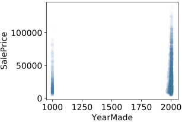
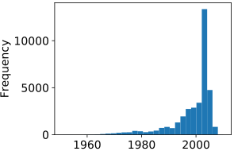

7 Exploring and Cleaning the Bulldozer Dataset
Terence Parr and Jeremy Howard
Copyright © 2018-2019 Terence Parr. All rights reserved.
Please don't replicate on web or redistribute in any way.
This book generated from markup+markdown+python+latex source with Bookish.
You can make comments or annotate this page by going to the annotated version of this page. You'll see existing annotated bits highlighted in yellow. They are PUBLICLY VISIBLE. Or, you can send comments, suggestions, or fixes directly to Terence.
We've learned a great deal so far about preparing data, feature engineering, and training models, but the apartment rent dataset is relatively small with few features. Over the next few chapters, we're going to explore and build models for a bulldozer auction prices dataset from Kaggle that has 8 times as many observations and 52 features. A large dataset presents a new set of problems, such as figuring out which features to focus on for feature engineering and being able to train and test models quickly. The bulldozer dataset is also rife with missing values. After working through the process we've laid out for this dataset, though, your final model will perform near the top of the leaderboard for the (now closed) bulldozer competition.
Another wrinkle with this dataset is that records represent bulldozer sales, and prices can drift over time due to inflation, financial crises, and so on. As a general rule, we can't train and test models for time-sensitive data the same way we do for time-insensitive data. The out-of-bag (OOB)  score isn't usually appropriate because OOB scores measure performance only within the training data period, not against future predictions. It's more appropriate to sort a dataset by date and then take the last, say, 20% as a hold-out validation set. That leaves the first 80% as the training set, which we use to train the model. Evaluating the performance of the model on the validation set gives a much more accurate estimate of model generality than the OOB score. That said, in order to tackle this bulldozer problem in pieces, we're going to start out measuring model performance using the OOB score, dramatically simplifying our process. Just keep in mind that the OOB score is overestimating model performance.
score isn't usually appropriate because OOB scores measure performance only within the training data period, not against future predictions. It's more appropriate to sort a dataset by date and then take the last, say, 20% as a hold-out validation set. That leaves the first 80% as the training set, which we use to train the model. Evaluating the performance of the model on the validation set gives a much more accurate estimate of model generality than the OOB score. That said, in order to tackle this bulldozer problem in pieces, we're going to start out measuring model performance using the OOB score, dramatically simplifying our process. Just keep in mind that the OOB score is overestimating model performance.
In this chapter, we'll examine the bulldozer data set, normalize and cleanup various values, fill in missing values, and then train an initial model. Next, in Chapter 8 Bulldozer Feature Engineering, we'll learn a few more encodings for categorical variables and improve the features identified as important by the initial model. After we figure out how to prepare this dataset, we'll explore in Chapter 9 Train, Validate, Test how to properly prepare validation and test sets for use in tuning the model and getting a true estimate of model generality.
7.1 Loading the bulldozer data
Our first step is to grab the bulldozer dataset from Kaggle's Blue Book for Bulldozers competition. Download files Train.zip (and uncompress), Valid.csv, and ValidSolution.csv into your data directory beneath the directory where you launch Jupyter. (You must be a registered Kaggle user and logged in.) The Train.csv file you get after uncompressing Train.zip is 116M, which takes about 35 seconds to load using Pandas' read_csv() function. That load time would be unbearably slow while staring at the screen and would make it harder to iterate quickly on our models. Instead, we're going to use the feather data format, which lets us load the data in about one second. The prep-bulldozer.py script (from this book's data directory) loads the training CSV data (for the first and only time), splits out a validation set, and saves them both using the fast feather format. The script also merges Valid.csv, and ValidSolution.csv into a single test dataframe and saves it for later use. From the command-line and in your data directory, execute the following to create the data files we need.
$ cd data
$ pip install feather-format
$ python prep-bulldozer.py
Created bulldozer-train-all.feather
Created bulldozer-train.feather
Created bulldozer-valid.feather
Created bulldozer-test.feather
1Don't forget the notebooks aggregating the code snippets from the various chapters.
For the next three chapters, we'll use bulldozer-train.feather as our data starting point. To start the coding process, create a notebook in the directory above data and paste in our usual preamble:1
import pandas as pd
import numpy as np
from sklearn.ensemble import RandomForestRegressor
from rfpimp import * # feature importance plot
2If you get an error “read_feather() got an unexpected keyword argument 'nthreads',” then try:
import feather
feather.read_dataframe("data/bulldozer-train.feather")
Anytime we need a fresh copy of the data, we can load it like this:2
df_raw = pd.read_feather("data/bulldozer-train.feather")
df = df_raw.copy()
It's a good idea to keep the original data around in df_raw so that we can undo any data transformations that end up being unhelpful.
7.2 Taking an initial look at the data
When inspecting a dataset for the first time, look for this key summary information: the column names, column datatypes, sample data elements, and how much data is missing. Here's a handy function to sniff a dataframe and return a different dataframe containing a summary where each row describes a column in the original dataframe:
def sniff(df):
with pd.option_context("display.max_colwidth", 20):
info = pd.DataFrame()
info['sample'] = df.iloc[0]
info['data type'] = df.dtypes
info['percent missing'] = df.isnull().sum()*100/len(df)
return info.sort_values('data type')
You can call sniff(df) from your notebook to get a complete summary, but in the interest of space, here are just the first 14 entries:
sniff(df).head(14)
We can learn a lot just from this quick sniff. There are three kinds of data: numeric, date time objects, and strings (object). Some columns are complete, but others have missing data, including column Tip_Control that is 94% missing. Some values are just plain missing (represented as either the None object or “not a number” np.nan in Python), but other “missing” values are actually physically-present strings like “None or Unspecified”.
Columns such as SalesID and ModelID are represented as integers (int64), but they are really nominal categorical variables. Model 8434 is not somehow greater than model 8433. There are also columns represented as strings that contain numeric values, such as Hydraulics (“2 Valve”). Other columns are represented as strings but are actually purely numeric but with units such as feet or inches. For example, the values in column Tire_Size should be converted to just the number of inches:
print(df['Tire_Size'].unique())
[None '14"' 'None or Unspecified' '20.5' '23.5' '26.5' '17.5' '29.5' '13"'
'20.5"' '23.5"' '17.5"' '15.5' '15.5"' '7.0"' '23.1"' '10"' '10 inch']
It's a good idea to look at the unique set of values for the other columns too as you experiment with this dataset. The next step in our exploration is to train a model.
7.3 Baseline model
While we only have a few numeric columns out of the 52 total, and some of those values are missing, it's still a good idea to train a model early on in our process. First, it tells us how long training the model takes. If training time is significant, we should consider working with a subset of the data. Second, it gives us an initial appraisal of the strength of the relationship between numeric features and the SalePrice target variable. The OOB from this initial model is our lower bound, so if it's pretty good, we can be optimistic about the performance of our model after feature engineering. Finally, a feature importance graph derived from the model helps to focus our cleanup efforts on the most predictive columns.
Let's identify the features represented as numbers so far are:
basefeatures = ['SalesID', 'MachineID', 'ModelID',
'datasource', 'YearMade',
# some missing values but use anyway:
'auctioneerID', 'MachineHoursCurrentMeter']
3We've chosen to create RFs with 50 trees because it gives a stable and accurate score while not requiring too much processing time.
We can reuse the test() function from Chapter 6 Categorically Speaking to train an RF and print the OOB score:3
def test(X, y, n_estimators=50):
rf = RandomForestRegressor(n_estimators=n_estimators, n_jobs=-1, oob_score=True)
rf.fit(X, y)
oob = rf.oob_score_
n = rfnnodes(rf)
h = np.median(rfmaxdepths(rf))
print(f"OOB R^2 {oob:.5f} using {n:,d} tree nodes with {h} median tree height")
return rf, oob
Columns auctioneerID and MachineHoursCurrentMeter have some missing values, represented as Numpy np.nan, but we can flip missing values to zeros as an expedient with function call fillna(0):
X, y = df[basefeatures], df['SalePrice']
X = X.fillna(0) # flip missing numeric values to zeros
rf, oob_baseline_initial = test(X, y)
OOB R^2 0.78075 using 22,500,374 tree nodes with 56.0 median tree height
That OOB score is not horrible and hints that there is a strong relationship to capture in this dataset.
Unfortunately, training the model via function fit() takes about 25 seconds, which would seem like an eternity as we repeatedly transformed data and retrained the model. To reduce training time, we could subsample the dataframe with df.sample(n=100_000), and that's how we'd do it if this were not time-sensitive data. Instead, let's grab the last 100,000 records (which are sorted by date), taking advantage of the fact that more recent data will be better at predicting the near future:
df = df.iloc[-100_000:] # take only last 100,000 records
After reducing the size of the dataframe, repeat the steps to train the model:
X, y = df[basefeatures], df['SalePrice']
X = X.fillna(0)
rf, oob_baseline = test(X, y)
OOB R^2 0.84512 using 5,556,904 tree nodes with 45.0 median tree height
Training the model now takes only about 5 seconds down from 25 seconds and, as a bonus, the of 0.845 is much better than the previous 0.781.
Now, let's see which features the model thinks are most predictive of bulldozer sale price:
I = importances(rf, X, y)
plot_importances(I)
The most important features are consistent with what we'd expect when evaluating a vehicle's value: what kind (model) of bulldozer it is, when it was made, how long it's been in use, etc.
Now that we have a good understanding of the data and a baseline model, let's start cleaning up the data.
7.4 Cleaning up
The easiest things to fix in the cleanup process are the small administrative details like changing column datatypes and deleting unusable columns, so let's start with those. According to the data description at Kaggle, SalesID is a unique identifier for a particular transaction. This is clearly not predictive as a SalesID value will never be seen again as a feature, so we can remove it. We can also remove MachineID because this variable has errors and inconsistencies; besides, it's not strongly-predictive according to our feature importance graph. Our first step is then:
del df['MachineID'] # dataset has inconsistencies
del df['SalesID'] # unique sales ID so not generalizer
The auctioneerID column values look like numbers, but they are really categorical variables, specifically nominal variables that have no order:
print(df['auctioneerID'].unique())
[nan 5. 2. 27. 1. 23. 3. 4. 20. 7. 8. 12. 10. 6. 21. 13. 9. 18.
99. 16. 14. 19. 28. 15. 22. 25. 17. 11. 24. 26. 0.]
Just to make this clear, let's change the data type to be string:
df['auctioneerID'] = df['auctioneerID'].astype(str)
If we leave this as a number, our process below for dealing with missing numeric values would replace the missing auctioneerID values with the median auctioneer ID, which is clearly meaningless.
So much for the numbers, let's take a look at the string-valued columns. Some are nice and tidy such as:
print(df['ProductGroup'].unique())
['TTT' 'TEX' 'WL' 'SSL' 'BL' 'MG']
but others have missing values:
print(df['Drive_System'].unique())
[None 'Two Wheel Drive' 'Four Wheel Drive' 'No' 'All Wheel Drive']
and others have physically-present strings to mean “missing:”
print(df['Backhoe_Mounting'].unique())
['None or Unspecified' None 'Yes']
Columns fiSecondaryDesc and fiModelSeries even have a value of “#NAME?”. This dataset has multiple ways to say “missing” or “unspecified,” but our model won't be able to figure the equivalencies on its own. We need to normalize all of these strings so that None, None or Unspecified, and #NAME? all mean “missing.” Let's encapsulate this equivalents in a function that transforms the dataframe so only np.nan means missing:
from pandas.api.types import is_string_dtype, is_object_dtype
def df_normalize_strings(df):
for col in df.columns:
if is_string_dtype(df[col]) or is_object_dtype(df[col]):
df[col] = df[col].str.lower()
df[col] = df[col].fillna(np.nan) # make None -> np.nan
df[col] = df[col].replace('none or unspecified', np.nan)
df[col] = df[col].replace('none', np.nan)
df[col] = df[col].replace('#name?', np.nan)
df[col] = df[col].replace('', np.nan)
After calling df_normalize_strings(df), all of the different ways to say none are collapsed to np.nan and strings all are lowercase:
df_normalize_strings(df)
print(df['Drive_System'].unique())
print(df['Backhoe_Mounting'].unique())
[nan 'two wheel drive' 'four wheel drive' 'no' 'all wheel drive']
[nan 'yes']
Some strings are actually numeric values, but include unit names or symbols that force the dataframe to treat them as strings:
print(df['Tire_Size'].unique())
print(df['Undercarriage_Pad_Width'].unique())
[nan '26.5' '20.5' '17.5' '23.5' '14"' '13"' '29.5' '17.5"' '15.5"'
'20.5"' '15.5' '23.5"' '7.0"' '10"' '23.1"']
[nan '36 inch' '24 inch' '20 inch' '34 inch' '26 inch' '30 inch' '28 inch'
'32 inch' '16 inch' '31 inch' '18 inch' '22 inch' '33 inch' '14 inch'
'27 inch' '25 inch' '15 inch']
It's a simple matter to strip off the " and inch characters to convert these two columns to numeric values. Here's a function to convert a column of strings to a numeric column by extracting any integer or floating-point numbers on the front of the string:
def extract_sizes(df, colname):
df[colname] = df[colname].str.extract(r'([0-9.]*)', expand=True)
df[colname] = df[colname].replace('', np.nan)
df[colname] = pd.to_numeric(df[colname])
extract_sizes(df, 'Tire_Size')
extract_sizes(df, 'Undercarriage_Pad_Width')
print(df['Tire_Size'].unique())
print(df['Undercarriage_Pad_Width'].unique())
[ nan 26.5 20.5 17.5 23.5 14. 13. 29.5 15.5 7. 10. 23.1]
[nan 36. 24. 20. 34. 26. 30. 28. 32. 16. 31. 18. 22. 33. 14. 27. 25. 15.]
There are two other columns that are numeric in nature but would be more complicated to parse apart (as they have both feet and inch units):
print(df['Blade_Width'].unique())
print(df['Stick_Length'].unique())
[nan "12'" "14'" "13'" "16'" "<12'"]
[nan '10\' 6"' '9\' 6"' '9\' 7"' '10\' 2"' '12\' 8"' '12\' 10"' '9\' 10"'
'9\' 8"' '11\' 0"' '10\' 10"' '8\' 6"' '9\' 5"' '14\' 1"' '11\' 10"'
'6\' 3"' '12\' 4"' '8\' 2"' '8\' 10"' '8\' 4"' '15\' 9"' '13\' 10"'
'13\' 7"' '15\' 4"' '19\' 8"']
The Blade_Width column even has a range in the form of <12'. It's better to leave these as strings, which we'll treat as categorical variables when prepping the data for use in a model.
7.5 Dealing with missing data
Missing data in CSV files is often indicated as physically missing (two commas in a row like “,,”), but some records use physically-present string values such as None or Unspecified. Some files use special indicator numbers to represent missing numeric values, such as -1 or 0. Pandas uses Numpy's np.nan (“not a number”) to represent values missing from data files in memory, for both numeric and string data types. Pandas stores physically-present numeric and string values in files as-is in memory. The point is that the definition of missing is ambiguous and depends on the dataset. That's why we normalized strings in the previous section so that only np.nan indicates “missing.” We'll do the same for numeric indicator values in this section.
Once the entire dataframe has a single definition of missing value, we still have to do something intelligent with these holes. Models can't train on “not a number” values. Our recipe to handle missing values looks like this: For numeric columns, we replace missing values with the median of that column and introduce a new boolean column that is true for any record where we replace a missing value. (Statisticians call replacing missing values imputation.) The strategy for nonnumeric columns simply is to leave them as-is with np.nan values. Our default string/categorical variable encoding is to label encode them, which will automatically replace np.nan values with zeros. (Label encoding assigns a unique integer for every unique string or category value.) Dealing with missing nonnumeric values is easiest so let's start by seeing how that works.
7.5.1 Replacing missing categorical values
In Section 6.2 Encoding categorical variables, we converted the string display_address column to numeric values by converting the column to an ordered categorical column and then replacing the categories with their category integer codes + 1. Pandas represents np.nan with category code -1 and so adding one shifts np.nan to 0 and all category codes to be 1 and above. For convenience, let's create two functions that implement our label-encoding strategy:
from pandas.api.types import is_categorical_dtype
def df_string_to_cat(df):
for col in df.columns:
if is_string_dtype(df[col]):
df[col] = df[col].astype('category').cat.as_ordered()
def df_cat_to_catcode(df):
for col in df.columns:
if is_categorical_dtype(df[col]):
df[col] = df[col].cat.codes + 1
Let's see the mechanism in action on a toy dataset:
df_toy = pd.DataFrame(data={'Name':['Xue',np.nan,'Tom']})
df_toy
Converting the string column to a categorical variable means Pandas will replace each string with a unique integer representation, which we can include in the dataframe:
df_string_to_cat(df_toy)
df_toy['catcodes'] = df_toy['Name'].cat.codes
df_toy
Pandas still displays the Name column values as strings because that's more meaningful, but the Name column is now categorical:
print(df_toy.dtypes)
Name category
catcodes int8
dtype: object
To complete the label encoding, we call the second function to replace the category values with the integer codes:
df_cat_to_catcode(df_toy)
df_toy
The Name column is one more than the catcodes column and so missing values become integer value 0 at the end of the encoding process.
To handle all missing nonnumeric values and label-encode nonnumeric columns, takes just two function calls:
df_string_to_cat(df)
df_cat_to_catcode(df)
df.head(2).T.head(10)
We've now converted all string columns to numbers and dealt with missing string values.
The unreasonable effectiveness of label encoding categorical variables
You might be wondering why it's “legal” to convert all of those unordered (nominal) categorical variables to ordered integers. We know for sure that assuming an order between categories is wrong. The short answer is that RF models can still partition such converted categorical features in a way that is predictive, possibly at the cost of a more complex tree model. This is definitely not true for many models, such as linear regression models (which require so-called “dummy” boolean columns, one for each unique categorical value). In practice, we've found label encoding categorical variables surprisingly effective, even when it seems more advanced methods would work better.
7.5.2 Replacing missing numeric values
To handle missing numeric values, we recommend a two step process:
- For column x, create a new boolean column x_na where x[i] is true if x[i] is missing.
- Replace missing values in column x with the median of all x values in that column.
Those two steps have simple and direct equivalents in Python, thanks to Pandas:
def fix_missing_num(df, colname):
df[colname+'_na'] = pd.isnull(df[colname])
df[colname].fillna(df[colname].median(), inplace=True)
Let's make a toy dataframe with a numeric column that's missing a value:
df_toy = pd.DataFrame(data={'YearMade':[1995,2001,np.nan]})
df_toy
and then run it through our function to see its effect on the dataframe:
fix_missing_num(df_toy, 'YearMade')
df_toy
The missing value in the third row has been replaced by 1998, the median of 1995 and 2001, and there is a new column called YearMade_na indicating we replaced a value.
The logic behind using the median is that we have to choose a number and so we might as well choose a number that's not going to skew the distribution of the data in that column. We also don't want to choose an extreme value that the model might latch onto as predictive. But, we should include a column in our dataset that indicates we've done this replacement because sometimes missing values are strongly predictive. For example, a bulldozer with an unknown manufacturing date is presumably less valuable because of the uncertainty. This approach is supported by recent academic research: On the consistency of supervised learning with missing values.
Turning back to the full dataset now, we previously converted Tire_Size from a string to a numeric column by parsing out the number of inches:
print(f"Values {df['Tire_Size'].unique()}")
print(f"Median {df['Tire_Size'].median()}")
Values [ nan 26.5 20.5 17.5 23.5 14. 13. 29.5 15.5 7. 10. 23.1]
Median 20.5
That still leaves a lot of missing values:
df[['Tire_Size']].head(6)
After applying fix_missing_num(), all np.nans representing missing values have been replaced with 20.5, the median of Tire_Size:
fix_missing_num(df, 'Tire_Size')
df[['Tire_Size']].head(6)
We also have to fix missing values in the other column we converted to numbers:
fix_missing_num(df, 'Undercarriage_Pad_Width')
Not all missing values are represented by np.nan. Sometimes people represent missing values by special indicator values during data entry or some conversion process. There are two numeric columns with such indicator values that we should fix because the feature importance graph suggests they are important.
One look at the relationship between YearMade and the bulldozer sale price shows that we have a problem:
» Generated by code to left

df_small = df.sample(n=5_000) # don't draw too many dots
df_small.plot.scatter('YearMade','SalePrice', alpha=0.02, c=bookcolors['blue'])
It's unlikely that humans were manufacturing bulldozers in the year 1000. Either the seller does not want to admit the age or does not know the age of the bulldozer. It's unclear why someone chose an indicator value of 1000 instead of 0 or -1, but we can fix this problem by replacing 1000 with np.nan. Then, we can apply our standard procedure for missing numeric values:
# There are some unlikely 1919, 1920 values too
# Assume < 1950 is "unknown"
df.loc[df.YearMade<1950, 'YearMade'] = np.nan
fix_missing_num(df, 'YearMade')
Now the manufacturing year versus sale price looks a lot more reasonable.
There's one last problem with this column. Some records indicate that the bulldozer was sold before it was made, although there is only one in the last 100,000 records of our training subset:
inverted = df.query("saledate.dt.year < YearMade")[['SalePrice','YearMade','saledate']]
inverted
That's easy enough to fix by setting the YearMade to the year of the sale date (using the assumption that the sale date is more recent and likely more accurate than the manufacturing date):
df.loc[df.eval("saledate.dt.year < YearMade"), 'YearMade'] = df['saledate'].dt.year
The other numeric column with a special value is MachineHoursCurrentMeter. At first glance, a bulldozer with 0 machine hours appears to be simply a new bulldozer. Let's filter for records with 0 missing hours and look at the histogram of YearMade:
» Generated by code to left

df.query("MachineHoursCurrentMeter==0")['YearMade'].plot.hist(bins=30)
Those manufacturing dates all precede 2009, which is the first sale year in our data subset. It's unlikely that all of those bulldozers sat idle from the time of their manufacture until their sale date years later. From this, we can conclude that 0 must indicate an unknown or “you really don't want to know” number of machine hours. Let's flip those zeros to np.nan and call fix_missing_num():
df.loc[df.eval("MachineHoursCurrentMeter==0"),
'MachineHoursCurrentMeter'] = np.nan
fix_missing_num(df, 'MachineHoursCurrentMeter')
After handling these missing numeric values, there are three new columns on the end of the dataframe:
df[df.columns[-3:]].head(5)
At this point all features are numeric, except for saledate, and missing values have been fixed.
7.6 Training a model with all features
Now that we have the dataframe prepped as pure numbers, we can use all the features to train a model and compare its performance to the baseline. The one exception is that saledate is still a time stamp, but we'll do something special with that in the next chapter. Here's the usual training sequence:
X, y = df.drop(['SalePrice','saledate'], axis=1), df['SalePrice']
rf, oob_all = test(X, y)
OOB R^2 0.89871 using 5,151,648 tree nodes with 43.0 median tree height
That 0.899 is a big improvement upon our baseline score of 0.845, but we can do better through feature engineering, which is the subject of the next chapter. Let's take a snapshot of this cleaned up dataset to avoid repeating the same process:
df = df.reset_index(drop=True)
df.to_feather("data/bulldozer-train-clean.feather")
To help focus our feature engineering efforts, let's check the feature importance graph (right gutter) to see what the model finds predictive. YearMade is still very important, but there's nothing left to do on that feature. Given their importance, we should take a close look at ProductSize, fiProductClassDesc, Enclosure, Hydraulics_Flow, fiSecondaryDesc, and so on. Also notice the long tail of unimportant features. These features could be truly unimportant or could be extremely important, but for a small subset of the records. The best strategy is to leave all features in the model until the end, and then gradually remove them until accuracy drops.
7.7 Summary
In this chapter, we did a lot of cleanup work on the bulldozer data set, mostly related to converting column datatypes and dealing with missing numeric and string values. Part of the cleanup process was to identify physically-present numbers or strings that actually represent missing values. Our df_normalize_strings() function normalizes the notion of missing to np.nan for strings, but we had to identify indicators of missing values, such as medieval sale dates of 1000, manually.
The most important lesson of this chapter is how to deal with missing values. Missing categorical values are dealt with automatically because of our recommended label-encoding process: Convert categories to unique integer values; missing values, np.nan, become category code 0 and all other categories are codes 1 and above. Dealing with missing numeric values requires a new column and replacement of np.nans:
- For column x, create a new boolean column x_na where x[i] is true if x[i] is missing.
- Replace missing values in column x with the median of all x values in that column.
At this point, you've got some good data cleaning skills, you know how to normalize and encode string columns as numeric values, and you know how to deal with missing values. That means you know how to prepare datasets for model training purposes. In the next chapter, were going to beef up your feature engineering skills.
{kind=link}
{kind=link}
{kind=link}
{kind=link}